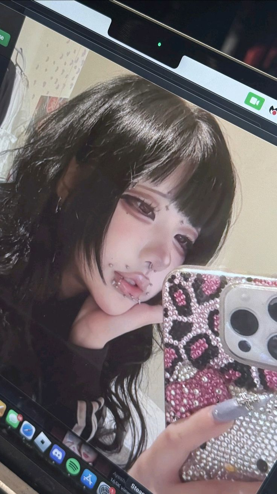

TikTok Star & Social Media Personality
| Birthday | March 21, 2008 |
| Birth Sign | Aries |
| Birthplace | Melbourne, Australia |
| Age | 17 years old |
| Ethnicity | Chinese |
Doris is a TikTok personality who is known for her @fish_fingersd TikTok account, which has attained over 2 million followers. She mainly posts makeup and lip-sync content. Her videos often showcase her goth aesthetic, including facial piercings, jet black hair, and dark clothing.
She began posting to TikTok in March 2022. One of her first videos features her lip-syncing to the song "Hotel" by rapper Lawsy.
One of her most popular TikToks was released in November 2023, where she lip-synced to "Moy Marmeladny" by Russian singer Katya Lel.
Doris was born in Melbourne, Australia and has Chinese heritage.
In April 2025, she posted a TikTok video featuring a makeup look inspired by K-pop star Wonyoung.

Socials
TikTok: @fish_fingersd
Instagram: @fish_fingiiies